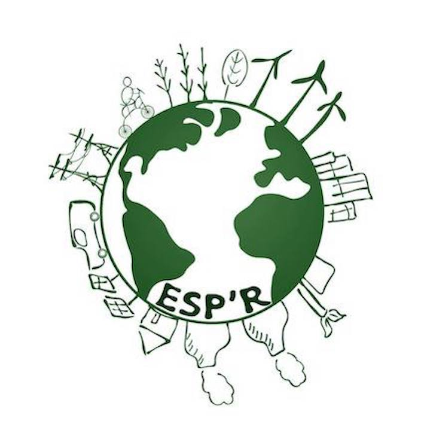

The objective is to provide HEC students and staff with a more environmentally friendly alternative to supermarkets:
Local and/or organic products!
Very affordable products, often cheaper than at Auchan!
Open to everyone (students, staff)!
Esp'R is the eco-student association of HEC Paris. We lead various projects to promote ecology on campus, including Furniture or Earth Week. In February 2022, we opened a local and solidarity grocery store on campus.
From Thursday to Monday morning 10 a.m., order all the products you want online.
On Tuesday and Wednesday, between 4:15 p.m. and 6:15 p.m., come and pick up your order at the local (building F, ground floor).Don't forget to bring your own containers!
During the opening hours of the premises, you can also come and buy all non-perishable products, without prior order.